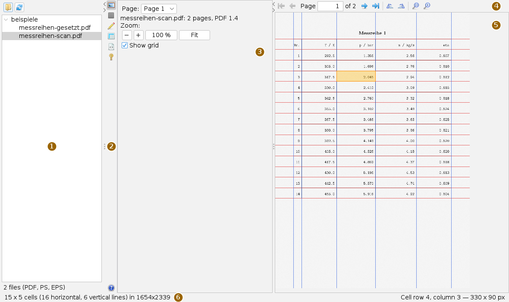
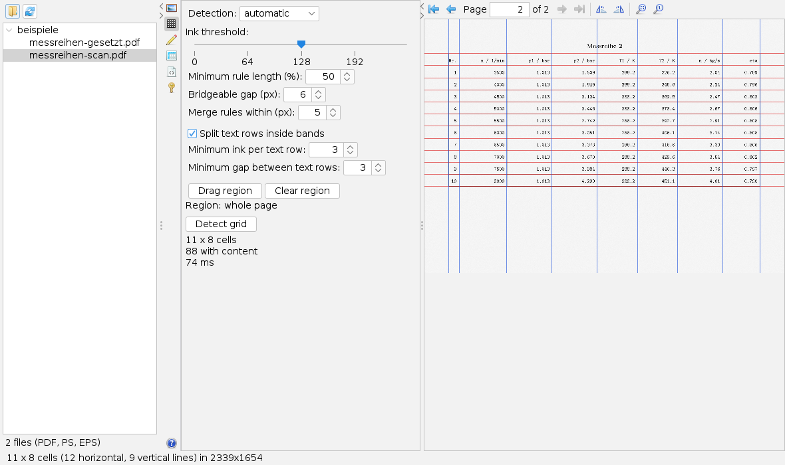
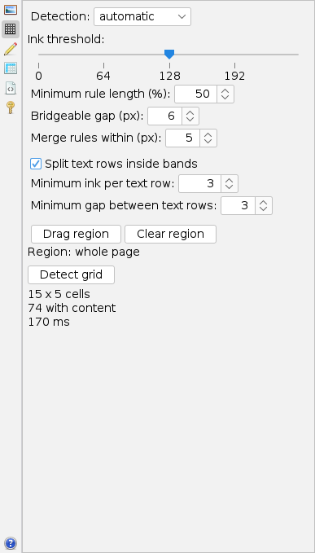
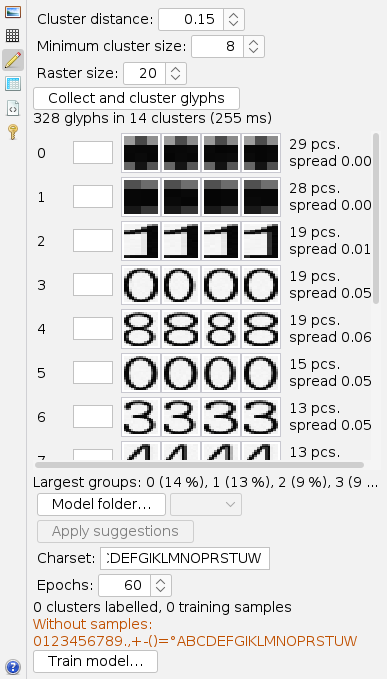
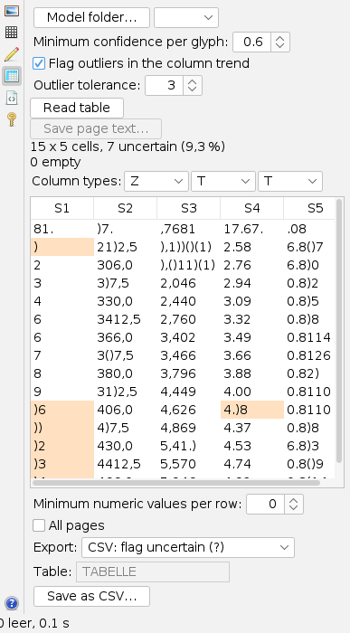
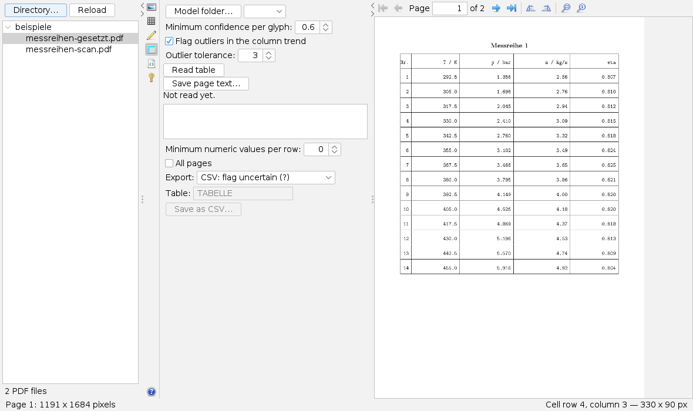

Using the PDF digitizer
User page, as of 6 October 2026. How to open a PDF file, detect the table grid, collect glyphs, read the table, check it and write it as CSV or into a database. The pictures are screenshots of the app with a made-up series of measurements.
The window
Open the app from the Apps menu with Open PDF Digitizer… or with Alt+P. Settings live in cards next to the page, not in separate windows.

Both dividers can be moved or collapsed completely with their small arrows, giving a wide page all the room. Red lines in the view separate rows, blue lines columns. A click into a cell highlights it, and the status line shows its row, column and size in pixels on the right.
The bars
The buttons carry icons only; what they do is shown in the tooltip. The side bar chooses the card.
| Icon | Tooltip | What happens |
|---|---|---|
| Page — File and zoom | Choose the page, zoom, show or hide the grid. | |
 | Grid — Detect table structure | Find rows and columns. |
| Glyphs — Label glyph clusters and train a model | Train a recogniser on the typeface of the document. | |
| Read — Read the table and save as CSV | Read, check, correct and export the cells. | |
 | PostScript — Show PostScript and EPS files (.ps, .eps) | Load PostScript and render it into the page view. |
| Password — Enter the password for an encrypted PDF | Appears by itself when a file asks for a password. | |
 | Help | The built-in help in place of the card; Close leads to the Page card. |
The bar above the page view pages, rotates and zooms:
| Icon | Tooltip | What happens |
|---|---|---|
| | First page, Previous page | Page backwards. |
| Next page, Last page | Page forwards. In between it reads “Page [n] of N”; type a number and press Enter to jump. | |
| Rotate page 90° counter-clockwise, … clockwise | Rotates the page image itself; a detected grid no longer applies afterwards. | |
 | Fit page, Actual size (100 %) | Whole page visible, or one image pixel per screen pixel. |
Reading a table
- Press the folder icon above the tree on the left (Choose a working directory with PDF files) and choose a folder; the icon next to it reads it again. The app searches it up to six levels deep for PDF, PS and EPS files and shows them as a tree; a running scan can be cancelled.
- Click a file in the tree. Only the first page is rendered at first, the others when you page to them.
- Grid card, Detect grid. The lines appear in the view; the card reports rows, columns and the cells with content.
- If there is no model for this typeface yet: Glyphs card, label the clusters, Train model….
- Read card: choose the model with Model folder…, Read table, check and correct the shaded cells.
- Choose the export mode and press Save as CSV….
Viewing and rotating pages

The Page card holds the page list, a line with file name, number of pages and PDF version, the buttons −, + (factor 1.25 each), 100 % and Fit, and Show grid. The mouse wheel over the page always zooms; scroll with the scroll bars. The status line gives the size of the page in pixels.
Pages marked as rotated in the file are already shown the right way up. If a table still lies sideways, rotate the page with the paging bar; the rotation applies per page and also to reading. Detect the grid again afterwards.
Detecting the grid

Detection: automatic looks for ruled lines first and, if no column or no row is found, takes the columns from the free gutters in the white space; Ruled lines and White space force one method. When white space was used, the status line says so.
Ink threshold (default 128) separates ink from paper. The Minimum rule length (50 per cent of the image edge) is the most important control: if the table fills only part of the page and too few lines are found, lower it. Bridgeable gap (6 px) helps when text interrupts the lines, Merge rules within (5 px) with thick or double lines.
Split text rows inside bands divides bands between widely spaced lines into single text rows; Minimum ink per text row and Minimum gap between text rows (3 each) control this.
Teaching glyphs

A recogniser reads a printed typeface reliably only once it has been trained on it. Collect and cluster glyphs cuts every glyph out of the cells of the detected grid and groups those that look alike (defaults: cluster distance 0.15, minimum cluster size 8, raster size 20).
Each row starts with the number and the field for the character; leave it empty to skip. Then come four examples, then count and spread, orange from 0.08: the cluster then probably holds two characters and is better left empty. At the bottom the card reports which characters of the Charset still have no samples.
Train model… asks for an .ennet file. The reported validation accuracy applies only to glyphs from this print. Model folder… ranks existing models by agreement; Apply suggestions fills only empty fields and only from 0.80 per glyph, with a warning below 0.98 overall agreement.
Reading, checking and saving

- Choose Model folder… and take the model from the list. Without a model the app asks first and reads by template matching; the picture shows the outcome.
- Set Minimum confidence per glyph (0.6), Flag outliers in the column trend and Outlier tolerance (3), then Read table.
- Uncertain cells have an orange background. Cells can be edited directly; a changed cell no longer counts as uncertain.
- Under Column types each column shows T (text), Z (numeric) or M (mixed, a number with a leading marker). A change reapplies the checks at once, without reading again.
- Choose Export and save.
| Export | Result |
|---|---|
| CSV: flag uncertain (?) | A question mark at the uncertain value. The default. |
| CSV: values only | Plain values. If cells were uncertain, the app warns after saving. |
| CSV: values + companion file | A second file with the flags. |
| H2 database | A table named as in Table; one column …_UNSICHER per value column. |
The CSV separator is the semicolon. Minimum numeric values per row drops header and footer rows (0 = all). With All pages the app reads every page with its own grid and writes everything into one file, the page number as first column; this requires a model and a page already read, because the save button is enabled only after that.
“0 uncertain” does not mean “0 wrong”. If a recogniser always confuses a character the same way, every column stays consistent and no check fires. So also compare unflagged cells against the original by sampling.
Typeset pages

If a page carries visible text, for instance from a typesetting program, the app draws the text layer and does not recognise. Read table then reports that the page is typeset; Save page text… writes its text as a UTF-8 file, read from the file instead of recognised. On a scan this button is disabled.
PostScript and password
The PostScript card loads a PS or EPS file with Open file…; files from the tree take the same route. Resolution (default 150, 36 to 600 dots per inch) and Redraw set the sharpness. Grid, glyphs and reading then work as for a scan; what the interpreter could not handle is listed in the card.
When a PDF asks for a password, the bar switches to the Password card: enter it, press Open or Enter. A wrong password is reported in the card; the field is cleared after every attempt, and the password is not kept.
What is saved
When the workspace is saved, the app only remembers that its tab is open. The directory read last serves as the starting folder for the next Directory…; it is only read on request. Grid, labels and read tables are lost on closing: results belong in the CSV, the database or a model file.
Keyboard and mouse
Alt+P opens the app. Enter triggers the page field of the paging bar and the password field. The mouse wheel zooms the page in steps of 15 per cent; a click selects a cell. The app has no other shortcuts.
Limits
- The grid is always rectangular; merged cells are not recognised.
- The minimum rule length refers to the whole page. Dragging a table region in the image is not possible in the interface.
- On scanned pages zooming does not sharpen the image; typeset pages and PostScript are redrawn for it.
- The six pages rendered last are kept; very large files stay usable that way.
Icons: Fugue Icons by Yusuke Kamiyamane, licence CC BY 3.0.